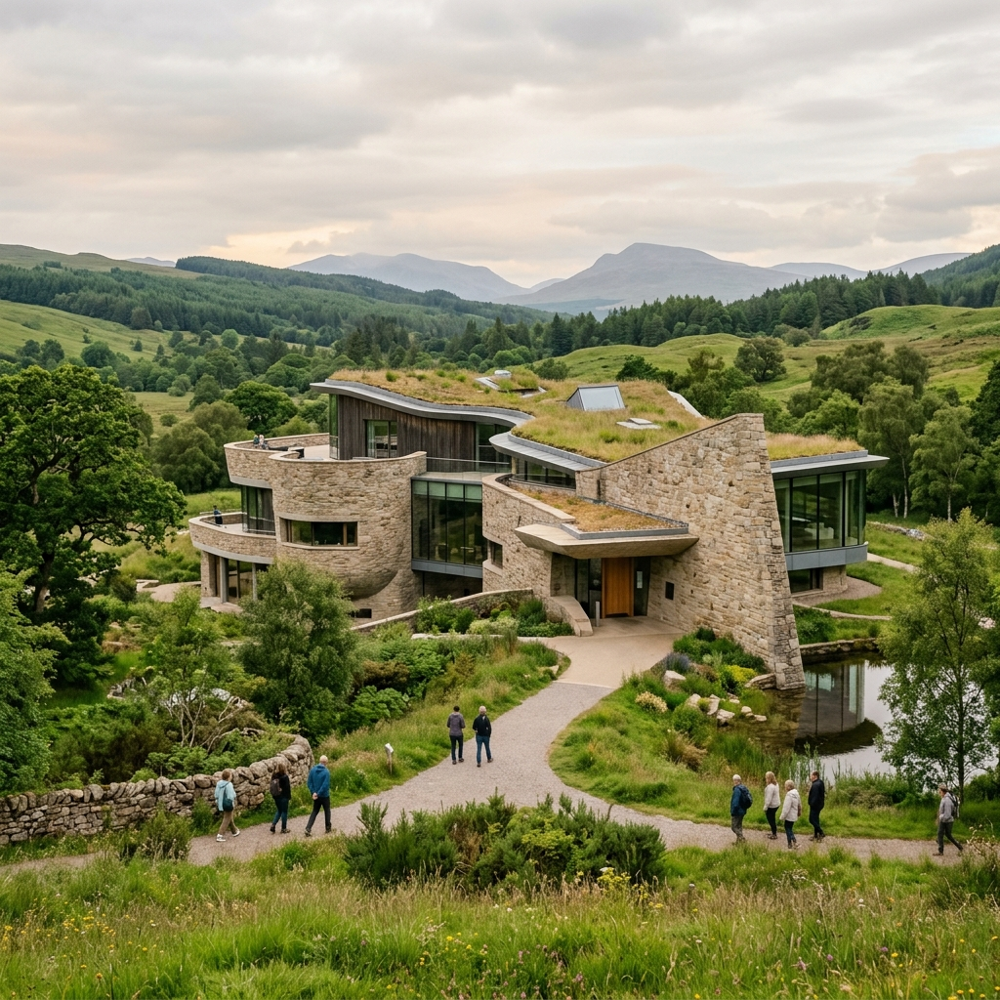

발길 닿는 곳마다 그림이 되는 곳,
자연이 살아 숨쉬는 양구로 여러분을 초대합니다.
A place where every step becomes a painting,
We invite you to Yanggu, where nature breathes.
Scroll Down
강원도 양구는 때묻지 않은 자연과 평화의 염원이 공존하는 특별한 여행지입니다. 숨막히도록 아름다운 파로호의 안개, 민간인 통제선 내에 감춰진 천혜의 비경, 그리고 한국 근대 미술의 거장 박수근 화백의 숨결까지. 양구에서의 시간은 당신에게 진정한 휴식과 영감을 선사할 것입니다. Yanggu, Gangwon-do, is a special destination where untouched nature and the desire for peace coexist. From the breathtaking fog of Paroho Lake, to the hidden pristine valleys within the Civilian Control Line, and the breath of Park Soo-keun, a master of modern Korean art. Your time in Yanggu will provide true rest and inspiration.
국토 정중앙 Center of Korea
청정 자연 Pure Nature
양구군이 인증한 믿고 먹을 수 있는 최고의 맛집들을 소개합니다. Introducing the best reliable restaurants certified by Yanggu-gun.
강원 양구군 양구읍 황강길 2222 Hwanggang-gil, Yanggu-eup
📞 전화번호 미제공
강원 양구군 양구읍 사명길 103103 Samyeong-gil, Yanggu-eup
📞 전화번호 미제공
강원 양구군 양구읍 중심로 186-1186-1 Jungsim-ro, Yanggu-eup
📞 전화번호 미제공
강원 양구군 양구읍 양남로7번길 1313 Yangnam-ro 7beon-gil, Yanggu-eup
📞 033-481-7333
강원 양구군 양구읍 청춘로 40-3640-36 Cheongchun-ro, Yanggu-eup
📞 033-481-8687
강원 양구군 양구읍 중앙길 3535 Jungang-gil, Yanggu-eup
📞 전화번호 미제공
강원 양구군 해안면 펀치볼로 13451345 Punchbowl-ro, Haean-myeon
📞 전화번호 미제공
강원 양구군 국토정중앙면 삼팔선로 11 Sampalseon-ro, Guktojeongjungang-myeon
📞 033-481-4635
강원 양구군 동면 펀치볼로 58-158-1 Punchbowl-ro, Dong-myeon
📞 033-481-0036
강원 양구군 양구읍 중앙길 43-843-8 Jungang-gil, Yanggu-eup
📞 033-481-9235
강원 양구군 양구읍 비봉로 91-2391-23 Bibong-ro, Yanggu-eup
📞 033-481-7922
강원 양구군 양구읍 장터길 1616 Jangteo-gil, Yanggu-eup
📞 전화번호 미제공
파로호 인공습지에 조성된 한반도 모양의 아름다운 인공섬. 짚라인과 오리배 등 레포츠와 산책을 동시에 즐길 수 있습니다. A beautiful artificial island shaped like the Korean peninsula in the Paroho wetland. Enjoy sports like ziplining and duck boats along with a peaceful walk.
민간인 통제선 내에 위치한 천혜의 비경. 맑고 깨끗한 계곡물과 숲이 어우러져 트레킹 코스로 사랑받는 곳입니다. A hidden pristine valley inside the Civilian Control Line. Loved as a trekking course where crystal clear waters and forests harmonize.

가장 한국적인 화가 박수근의 예술혼이 살아 숨쉬는 곳. 아름다운 건축물과 자연이 하나 되는 예술적 공간입니다. Where the artistic soul of Park Soo-keun, the most Korean painter, breathes. An artistic space where beautiful architecture and nature become one.
양구의 아름다운 자연과 함께 편안한 휴식을 취할 수 있는 숙박시설입니다. Accommodations where you can take a comfortable rest with the beautiful nature of Yanggu.
강원 양구군 양구읍 파로호로 993-19993-19 Paroho-ro, Yanggu-eup
📞 033-482-7700
강원 양구군 양구읍 금강산로 998998 Geumgangsan-ro, Yanggu-eup
📞 010-6243-0923
강원 양구군 양구읍 중앙길 43-3543-35 Jungang-gil, Yanggu-eup
📞 전화번호 미제공
강원 양구군 양구읍 간척월명로 1520-391520-39 Gancheokwolmyeong-ro, Yanggu-eup
📞 033-482-1178
강원 양구군 양구읍 관공서로 2323 Gwangongseo-ro, Yanggu-eup
📞 전화번호 미제공
강원 양구군 양구읍 비봉로 64-3164-31 Bibong-ro, Yanggu-eup
📞 033-481-3388
강원 양구군 방산면 두타연로 88 Dutayeon-ro, Bangsan-myeon
📞 033-480-7266
강원 양구군 동면 숨골로310번길 54-2154-21 Sumgol-ro 310beon-gil, Dong-myeon
📞 010-9047-4231
강원 양구군 양구읍 양록길23번길 16-1416-14 Yangnok-gil 23beon-gil, Yanggu-eup
📞 033-481-5455
강원 양구군 양구읍 공수리 51-151-1 Gongsu-ri, Yanggu-eup
📞 010-8982-8381
강원 양구군 양구읍 비봉로74번길 14-714-7 Bibong-ro 74beon-gil, Yanggu-eup
📞 0503-5053-5301
강원 양구군 양구읍 양록길23번길 16-416-4 Yangnok-gil 23beon-gil, Yanggu-eup
📞 전화번호 미제공
강원 양구군 양구읍 비봉로 99-399-3 Bibong-ro, Yanggu-eup
📞 전화번호 미제공
강원 양구군 양구읍 관공서로 49-349-3 Gwangongseo-ro, Yanggu-eup
📞 033-481-2953
강원 양구군 해안면 펀치볼로 13511351 Punchbowl-ro, Haean-myeon
📞 전화번호 미제공
사계절 내내 다채로운 매력을 뽐내는 양구. 달마다 가장 빛나는 명소를 소개합니다.
막 찍어도 화보가 되는 양구의 숨은 명소들. 아름다운 순간을 카메라에 담아보세요. Hidden spots in Yanggu that look like a photoshoot wherever you take a picture. Capture beautiful moments.
#Yanggu #Sunset #Paroho
#Healing #BirchForest #Nature
#Flower #Spring #Picnic